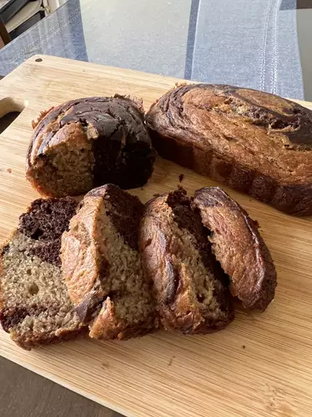

Dark Chocolate Marbled Banana Bread with Greek Yogurt

Description
This bread isn't very sweet, so it's not for those who enjoy a sweeter bread. The chocolate throughout makes this a special bread.
Ingredients
- 1 ½ cups all-purpose flour
- 1 teaspoon baking soda
- ¼ teaspoon salt
- 5 tablespoons hot water
- ¼ cup cocoa powder
- 2 large overripe bananas, mashed
- ½ cup Greek yogurt
- ½ cup butter, melted
- ½ cup brown sugar
- 2 eggs, beaten
- 1 tablespoon vanilla extract
Steps
- Preheat oven to 350 degrees F (175 degrees C). Grease a loaf pan.
- Whisk flour, baking soda, and salt together in a bowl.
- Whisk hot water and cocoa powder in a large bowl until smooth.
- Combine mashed bananas, Greek yogurt, butter, brown sugar, eggs, and vanilla extract in another large bowl; mix well. Fold in flour mixture until thoroughly combined.
- Mix half of the banana mixture into the cocoa mixture until well combined.
- Spoon banana mixture and cocoa mixture into the prepared pan, alternating between the two.
- Bake in the preheated oven until a toothpick inserted into the center comes out clean, about 55 minutes.